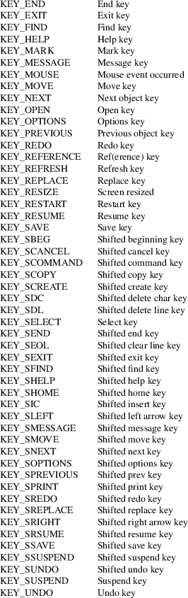
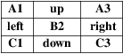

getch, wgetch, mvgetch, mvwgetch, ungetch, has_key − get (or push back) characters from curses terminal keyboard
#include <curses.h>
int
getch(void);
int wgetch(WINDOW *win);
int
mvgetch(int y, int x);
int mvwgetch(WINDOW *win, int y,
int x);
int ungetch(int ch);
/* extension */
int has_key(int ch);
Reading
characters
The getch, wgetch, mvgetch and
mvwgetch, routines read a character from the window.
In no-delay mode, if no input is waiting, the value
ERR is returned. In delay mode, the program waits
until the system passes text through to the program.
Depending on the setting of cbreak, this is after one
character (cbreak mode), or after the first newline
(nocbreak mode). In half-delay mode, the program waits until
a character is typed or the specified timeout has been
reached.
If echo is enabled, and the window is not a pad, then the character will also be echoed into the designated window according to the following rules:
|
• |
If the character is the current erase character, left arrow, or backspace, the cursor is moved one space to the left and that screen position is erased as if delch had been called. | ||
|
• |
If the character value is any other KEY_ define, the user is alerted with a beep call. | ||
|
• |
If the character is a carriage-return, and if nl is enabled, it is translated to a line-feed after echoing. | ||
|
• |
Otherwise the character is simply output to the screen. |
If the window is not a pad, and it has been moved or modified since the last call to wrefresh, wrefresh will be called before another character is read.
Keypad
mode
If keypad is TRUE, and a function key is
pressed, the token for that function key is returned instead
of the raw characters:
|
• |
The predefined function keys are listed in <curses.h> as macros with values outside the range of 8-bit characters. Their names begin with KEY_. | ||
|
• |
Other (user-defined) function keys which may be defined using define_key(3X) have no names, but also are expected to have values outside the range of 8-bit characters. |
Thus, a variable intended to hold the return value of a function key must be of short size or larger.
When a character that could be the beginning of a function key is received (which, on modern terminals, means an escape character), curses sets a timer. If the remainder of the sequence does not come in within the designated time, the character is passed through; otherwise, the function key value is returned. For this reason, many terminals experience a delay between the time a user presses the escape key and the escape is returned to the program.
In ncurses, the timer normally expires after the value in ESCDELAY (see curs_variables(3X)). If notimeout is TRUE, the timer does not expire; it is an infinite (or very large) value. Because function keys usually begin with an escape character, the terminal may appear to hang in notimeout mode after pressing the escape key until another key is pressed.
Ungetting
characters
The ungetch routine places ch back onto the
input queue to be returned by the next call to
wgetch. There is just one input queue for all
windows.
Predefined
key-codes
The following special keys are defined in
<curses.h>.
|
• |
Except for the special case KEY_RESIZE, it is necessary to enable keypad for getch to return these codes. | ||
|
• |
Not all of these are necessarily supported on any particular terminal. | ||
|
• |
The naming convention may seem obscure, with some apparent misspellings (such as “RSUME” for “resume”). The names correspond to the long terminfo capability names for the keys, and were defined long ago, in the 1980s. |

Keypad is arranged like this:

A few of these predefined values do not correspond to a real key:
|
• |
KEY_RESIZE is returned when the SIGWINCH signal has been detected (see initscr(3X) and resizeterm(3X)). This code is returned whether or not keypad has been enabled. | ||
|
• |
KEY_MOUSE is returned for mouse-events (see curs_mouse(3X)). This code relies upon whether or not keypad(3X) has been enabled, because (e.g., with xterm(1) mouse prototocol) ncurses must read escape sequences, just like a function key. |
Testing
key-codes
The has_key routine takes a key-code value from the
above list, and returns TRUE or FALSE
according to whether the current terminal type recognizes a
key with that value.
The library also supports these extensions:
define_key
defines a key-code for a given string (see define_key(3X)).
key_defined
checks if there is a key-code defined for a given string (see key_defined(3X)).
All routines return the integer ERR upon failure and an integer value other than ERR (OK in the case of ungetch) upon successful completion.
ungetch
returns ERR if there is no more room in the FIFO.
wgetch
returns ERR if the window pointer is null, or if its timeout expires without having any data, or if the execution was interrupted by a signal (errno will be set to EINTR).
Functions with a “mv” prefix first perform a cursor movement using wmove, and return an error if the position is outside the window, or if the window pointer is null.
Use of the escape key by a programmer for a single character function is discouraged, as it will cause a delay of up to one second while the keypad code looks for a following function-key sequence.
Some keys may be the same as commonly used control keys, e.g., KEY_ENTER versus control/M, KEY_BACKSPACE versus control/H. Some curses implementations may differ according to whether they treat these control keys specially (and ignore the terminfo), or use the terminfo definitions. Ncurses uses the terminfo definition. If it says that KEY_ENTER is control/M, getch will return KEY_ENTER when you press control/M.
Generally, KEY_ENTER denotes the character(s) sent by the Enter key on the numeric keypad:
|
• |
the terminal description lists the most useful keys, | ||
|
• |
the Enter key on the regular keyboard is already handled by the standard ASCII characters for carriage-return and line-feed, | ||
|
• |
depending on whether nl or nonl was called, pressing “Enter” on the regular keyboard may return either a carriage-return or line-feed, and finally | ||
|
• |
“Enter or send” is the standard description for this key. |
When using getch, wgetch, mvgetch, or mvwgetch, nocbreak mode (nocbreak) and echo mode (echo) should not be used at the same time. Depending on the state of the tty driver when each character is typed, the program may produce undesirable results.
Note that getch, mvgetch, and mvwgetch may be macros.
Historically, the set of keypad macros was largely defined by the extremely function-key-rich keyboard of the AT&T 7300, aka 3B1, aka Safari 4. Modern personal computers usually have only a small subset of these. IBM PC-style consoles typically support little more than KEY_UP, KEY_DOWN, KEY_LEFT, KEY_RIGHT, KEY_HOME, KEY_END, KEY_NPAGE, KEY_PPAGE, and function keys 1 through 12. The Ins key is usually mapped to KEY_IC.
The *get* functions are described in the XSI Curses standard, Issue 4. They read single-byte characters only. The standard specifies that they return ERR on failure, but specifies no error conditions.
The echo behavior of these functions on input of KEY_ or backspace characters was not specified in the SVr4 documentation. This description is adopted from the XSI Curses standard.
The behavior of getch and friends in the presence of handled signals is unspecified in the SVr4 and XSI Curses documentation. Under historical curses implementations, it varied depending on whether the operating system’s implementation of handled signal receipt interrupts a read(2) call in progress or not, and also (in some implementations) depending on whether an input timeout or non-blocking mode has been set.
KEY_MOUSE is mentioned in XSI Curses, along with a few related terminfo capabilities, but no higher-level functions use the feature. The implementation in ncurses is an extension.
KEY_RESIZE is an extension first implemented for ncurses. NetBSD curses later added this extension.
Programmers concerned about portability should be prepared for either of two cases: (a) signal receipt does not interrupt getch; (b) signal receipt interrupts getch and causes it to return ERR with errno set to EINTR.
The has_key function is unique to ncurses. We recommend that any code using it be conditionalized on the NCURSES_VERSION feature macro.
curses(3X), curs_inopts(3X), curs_mouse(3X), curs_move(3X), curs_outopts(3X), curs_refresh(3X), curs_variables(3X), resizeterm(3X).
Comparable functions in the wide-character (ncursesw) library are described in curs_get_wch(3X).